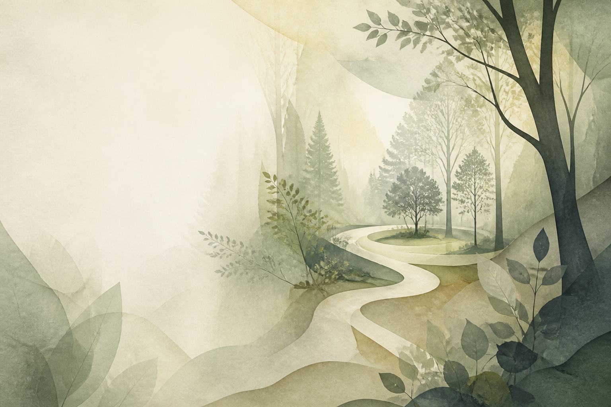

01 一次安静的自我照见
在十六种
人格里，遇见
更真实的自己
认识自己，不是给人生贴上一个标签，而是终于看见：那些反复出现的感受、选择与渴望，原来都有迹可循。
实时记录
感谢 4 人与我们相遇
- 24个情境问题
- 4个偏好维度
- 0注册与上传

类型给你一盏灯，
路仍由你自己走。
ABOUT THIS JOURNEY
你不需要被定义，
只需要被更好地理解。
MBTI 描绘的是偏好，而不是能力；是此刻的倾向，而不是永远的结论。它无法概括完整的你，却可以为那些难以言明的部分，提供一套温柔的语言。
把结果当作一张地图：它帮助你辨认当前位置，但不会替你决定目的地。
03 THE 16 PATTERNS
十六种方式，
理解同一个世界
每一种人格都拥有自己的光，也有需要慢慢看见的阴影。选择一张卡片，读一段不急于下结论的描述。
16
没有哪一种人格更好。
不同，只是我们抵达真实的不同路径。
04 A QUIET TEST
暂时放下“应该”，
听听你真实的反应。
24 个生活情境，没有标准答案。不要选择“更好的自己”，只需选择那个更接近你日常状态的答案。
你的答案不会上传，也不会用于诊断。
05 NOTES FOR WITHIN
测试之后，
继续向内走一点
比起记住四个字母，更重要的是看见它们如何出现在你的关系、情绪与日常选择里。
BEGIN FROM HERE